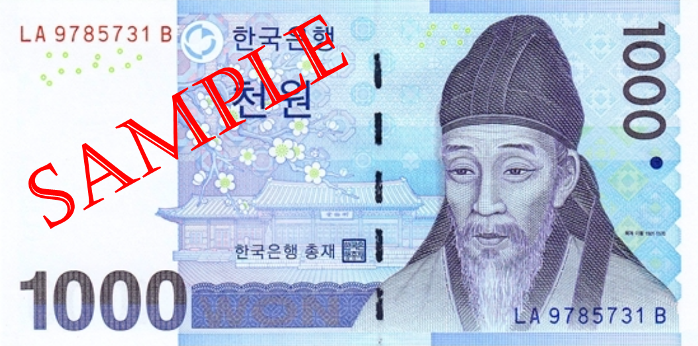
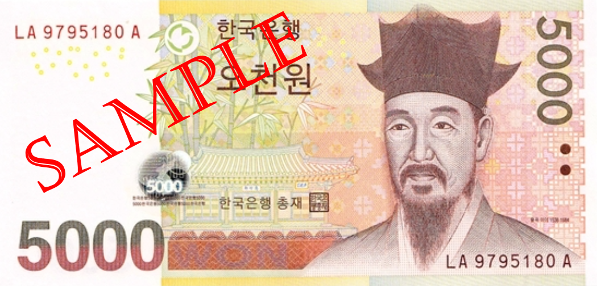
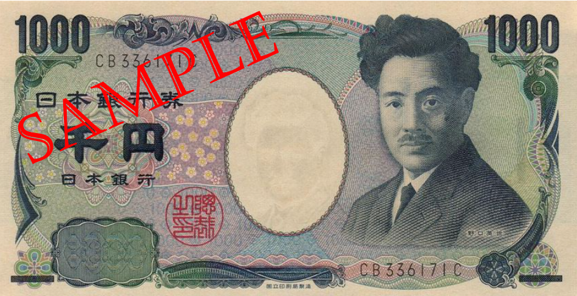
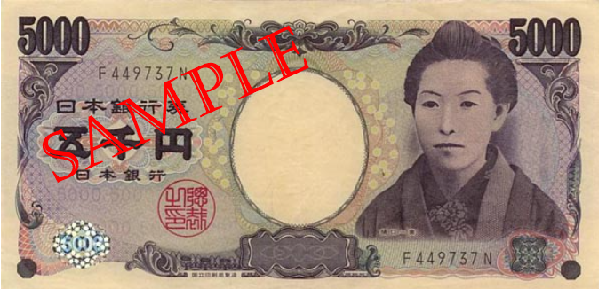
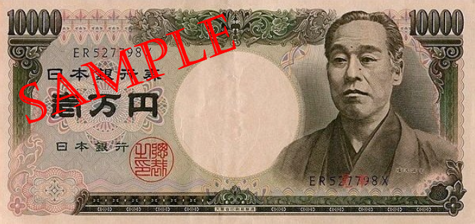
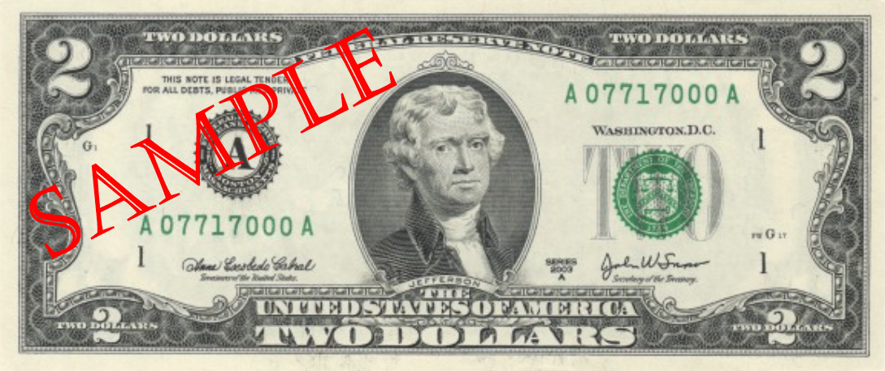
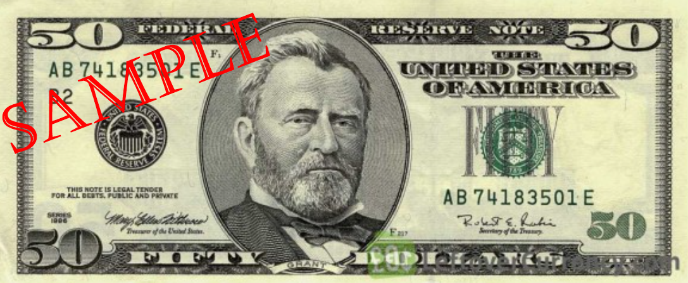
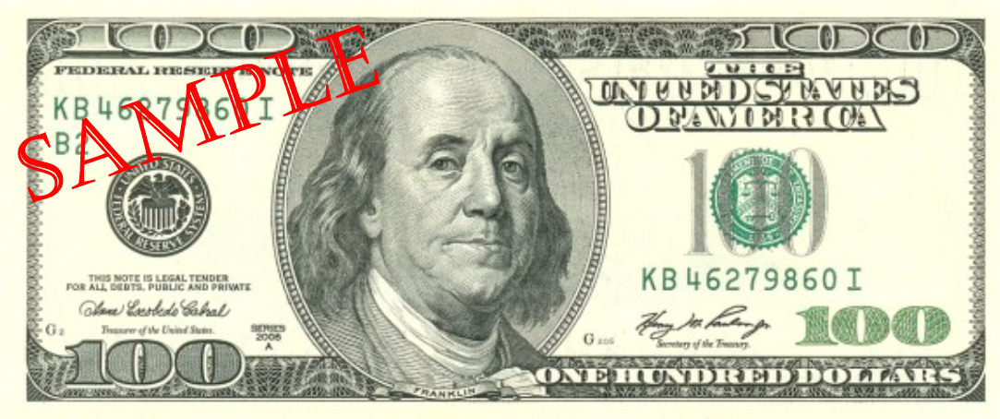

What a day!! Hi! This is developer Horuru.
I created a service to see if I resemble a currency person of the country and how much my face is.
Are you struggling with various situations these days that are difficult with corona?
So I made it with the mind that I wish you could laugh through a funny things.
The first criterion for selecting a person of currency was to be based on Asians.
So I tried to make it based on East Asian paper money greats,
but major East Asian countries used the same person in several bank notes (ex. China, Vietnam).
Thus, based on Korea, the United States and Japan,
the banknotes for which the result value will be selected were selected.
The United States is a country that has a lot of influence around the world,
so I chose the dollar because everyone knows it.
I selected the face photos of celebrities that look similar to currency figures and machine learned for 5-600 photos.
From now on,
let's take a look at which people from which country have been selected as banknotes and their achievements?
First, Korea.

Korea 1000 won - Toegye Lee Hwang.
Korea's leading Confucianist.
He is one of the six prefectures who simultaneously engaged in literacy and orientation with Jongmyo Lee, Lee Eon-jeok, Lee Lee, Song Si-yeol, Park Se-chae, and Kim Ji-ip.
He worked hard on the establishment of the seowon and the training of successors,
and some of his writings were looted by Japanese troops during the Imjin War, which also influenced the development of Japanese Confucianism.

Korea 5000 won - Yulgok Lee.
A scholar of Joseon and Confucianism.
It is one of the six strings that simultaneously engaged in literary work and orientation with Jongmyo, along with Lee Eon-jeok, Lee Hwang, Song Si-yeol, Park Se-chae, and Kim Ji-ip.
In the past nine times, he received the nickname of Gudo Jangwon-gong (九度壯元公) after receiving the Jangwon-class system.
Among his achievements, he is well-known for revealing the study of the theory of egi and monoism in Sung Confucianism.
Korea 10,000 won - King Sejong.
The fourth king of Joseon.
Sejong left outstanding achievements in many fields such as science and technology, art, culture, and national defense. He published a book on farming to the people, but saw that he could not read the text.
Hunminjeongeum(The beginning of korean), an efficient and scientific writing system that anyone can easily learn, was created.
It was developed into Korean by Ju Si-gyeong in the 20th century, and is widely used as an official character in Korea today.
(Korea's representative great man loved by the developer Horuru!)
Korea 50000 won - Sinsaimdang.
A writer, Confucian scholar, painter, writer, and poet in the middle of the Joseon Dynasty.
She was excellent in painting, calligraphy, and poetry, and he was also good at sung and conscientious, and she was also good at cross-stitching and fabricating.
She has an understanding of sacred and conscientious knowledge, ethics, sentences, classics, and historical knowledge.
Her son Yi Yi(the man of Korean 5000) was a university student and politician, and his daughter Mae-chang Lee and his son Lee Woo were famous as literary painters.
Second, Japan.

Japan 1000 yen - Hideyo Noguchi
As a bacteriologist who became world famous through research on cultivating syphilis pathogens, he was selected as a person loved by the Japanese.
While studying yellow fever, a tropical infectious disease during the war, he also died of yellow fever.
From 1913 to 1972, he was nominated for the Nobel Prize in Physiology or Medicine 9 times.

Japan 5000 yen - Higuchi Ichiyo
A female novelist who pioneered Japanese modern novels.
After the Meiji Restoration, as the first female writer among modern writers, she had a great influence on the history of modern literature, but died young at age 24.

Japan 10000 yen - Yukichi Fukuzawa
Enlightenment thinker and educator of the Edo-Meiji era.
He was also selected as a person loved by the Japanese as a person who insisted on the theory of dearism, such as the breakdown of the feudal era and the active introduction of Western civilization.
By emphasizing practical science and the power of wealthy nations, the ideological grounds for the development of capitalism were laid.
It is also famous as the founder of Jijisanbo, the predecessor of Keio Juku and the predecessor of the Sankei Shimbun.
Third, America
US $1 - George Washington.
America's first president and founding father.
As a person who led the war of independence against England, he enacted the federal constitution that underlies the United States and strengthened the authority of the central government.

US $2 - Thomas Jefferson.
The third president of the United States.
He formed the Democratic Republican Party to stand against the federalist right-wing Alexander Hamilton, became a leader, and is famous for carrying out the basic work of the Declaration of Independence.
The two dollars aren't actually a bill often used when trading in the US.
US $10 - Alexander Hamilton.
Treasury Secretary during the first President George Washington government.
He contributed to the enactment of the US Constitution in 1787 and advocated the formation of a strong federal government.

US $50 - Simpson Grant.
18th President of the United States.
As an American soldier, he surrendered the Confederate commander during the Revolutionary War, effectively ending the war, and became a national hero.
He is also one of the most critically acclaimed presidents of all time for corruption while in office.

US $100 - Benjamin Franklin.
One of America's first politicians.
Although he did not gain special public status, he played an important role in the French military and alliance and was a pivotal point in American independence.
He is called a typical American with utilitarianism.
As one of the Enlightenment thinkers, he was influenced by European scientists and invented lightning rods and multifocal lenses.
It's made for fun, so don't be disappointed if a small amount comes out. It was simply made for fun!!
Please refer to that point and enjoy. I will also see you with other interesting services. Thank you!!!!
+ Also, I would like to express my gratitude to Jo Coding for helping to create this service~ Jo Coding's site is below!